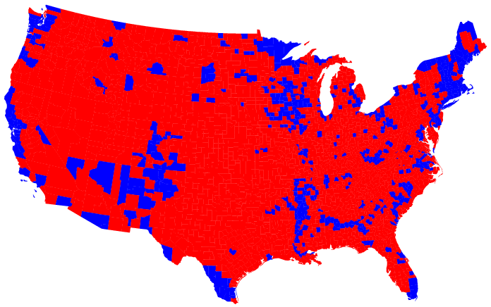
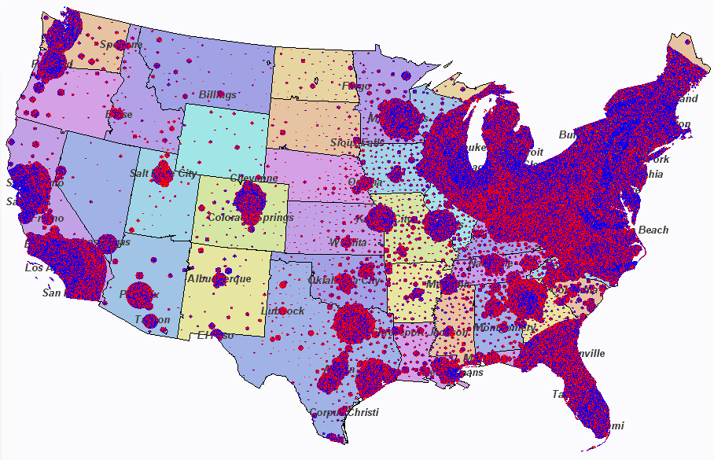

name: inverse layout: true class: left, top, inverse --- # Visualization in Data Mining --- ## Your Brain .left-column[ + Pattern detector + Visualizations help you search for possible models + Help intuitively understand the data ] .right-column[ <img src="img/memory-recall.png" width=100% /> ] ??? ## Visual + For most people, vision is the strongest sense + Recall improves 55% (10% => 65%) with the addition of a picture + We've talked about the need to understand the data before using algorithms on it. Visualization can speed that process up. --- ## Patterns + Use visualizations that surface patterns and relationships + Know the context for the visualization + Verify results ??? ## Steps + For gaining intuition, focus on simple visualizations that help you see relationships in the data. + At this time, labels, titles, etc. not very important. Multiple dimension in multiple windows? Fine! + We'll discuss, but the context a visualization is going to be used in matters a lot. Don't feel like you have to import every cool infographic into your project + Clustering, classification, outlier selection can be verified visually, e.g., highlighting points. Use it to gut check conclusions, even if you have to drastically reduce dimensionality --- ## Scatter + Great for multidimensional data + Just plot > 2 dimensions in different plots + Reveals correlation, clustering, distribution, ... ??? ## Data Mining + DM bread and butter. Often deal with high dimensionality, so scatter is one of the best ways to visualize + Wide variety of patterns can be searched --- ## Multiple Dimensions <img src="img/vp-sample.png" width=100% /> ??? ## vp + This data is for body positions over time + Dimensions are the different angles for different body parts, like hip ankle, knee, over time + We can see some strong patterns. Maybe we'll need to kernelize them to make them learnable, but we have a good understanding that there are, or are not relationships between the data --- ## Geographic .center[  ] ??? ## Trade-offs + Coordinates intuitively understandable + Dependence on geographical area (e.g., when you'd like to depend on human impact instead) + Lots of ways to bucket/aggregate + 2004 Presidential election - Bush won 50.3% of the popular vote and Kerry 48.3%, does it looks like that here? + img: http://www-personal.umich.edu/~mejn/election/2004/ --- ## Geographic .center[  ] ??? + Don't be afraid to "bend" things to get different insights + Each pixel represents 1,000 votes in the 2004 Presidential election + Red ==> Bush + Blue ==> Kerry + Green ==> Nader + Because some parts of the country have far more than 1000 votes per pixel, draw the pixel on the closest part of the map that isn't already used + You lose precise vote locations, but you see how mixed the results actually are and how population density is involved --- ## Other Chart Types + Box plot + aggregate data + Bar charts + simple summaries + Pie charts + compound proportions ??? ## Types + Box plots, for real data, still carry a lot of data + Bar charts nice for summarizing, not great for exploring + Same for pie charts. Pie charts are mostly bad, but can use in particular circumstances --- ## Aesthetics + The visual aesthetics you use should be tied to the data <img src="img/graphics-aesthetics.png" width=100% /> ??? ## Aesthetics + What are some of the techniques we can use to tie data to a visual representation? + img: Kevin Lynagh, http://keminglabs.com/talks/ --- ## Larger Value? + Position + Length / Angle + Area / Volume + Color: Chroma Luminance ??? ## Slide Switch + Hadley Wickham slides, OSCON: http://cdn.oreillystatic.com/en/assets/1/event/80/Designing%20effective%20visualisations_%20matching%20data%20problems%20to%20our%20perceptual%20strengths%20%20Presentation.pdf --- ## Color: HCL .left-column[ + Hue + color type + Chroma + colorfulness, perceived color intensity + Luminosity + brightness, light-dark ] .right-column[ <img src="img/Munsell.png" width=100% /> ] ??? ## Color Spaces + Many other color spaces, probably most familiar with RGB + HCL is useful because it separates the properties of a color into ones that can be mapped to data + Hue: nominal, can't compare + Chroma, Luminosity: numerical / comparable value + Chroma vs Saturation: chroma *perception* relative to white, saturation measure of color intensity + http://rourkevisualart.com/wordpress/2008/02/22/the-difference-between-chroma-and-saturation/ --- ## ColorBrewer + http://colorbrewer2.org/ + Type of comparison => type of color difference + Lots of other practical features --- ## Careful + Some aesthetics can combine to form illusions + http://www.michaelbach.de/ot/sze_sineIllusion/ ??? ## Line Lengths + Line lengths can appear to look smaller when extended instead of right next to each other --- ## Careful http://www.youtube.com/embed/FWSxSQsspiQ ??? ## Comparisons + We're good at comparing things side by side. + We're bad at comparing things from memory. --- ## Grammar of Graphics + Geom + Graphic element + Aesthetics + appearance of a geom + Data + raw, context, statistical aggregations of data + Mapping + functions which map data to geom properties or aesthetics ??? ## Bringing Together + We've talked about different aesthetics of showing data, we've talked about data, all that's needed is to bring them together + Wilkinson, L. (2005), The Grammar of Graphics (2nd ed.). Statistics and Computing, New York: Springer. + Rigorous way of describing graphics beyond "scatter plot" or "bar chart" --- ## Scatter Plot <img src="img/scatter-ice-cream.gif" width=100% /> ??? ## Ice Cream + Plot shows hypothetical sales of ice cream vs temperature + Geoms + points (actually, ticks are geoms, too) + Data + sales, temperature (and context: how large is the potential plot size) + Mapping + sales ==> y, temp ==> x + img: http://www.mathsisfun.com/data/scatter-xy-plots.html --- ## Bar Plot .white-background[ <img src="img/bar-graph-fruit.gif" width=80% /> ] ??? ## Fruit + Plot shows fruit popularity + Geoms + bars (and ticks, text) + Data + fruit to popularity + Mapping + popularity ==> height, fruit type ==> x, color + img: http://www.mathsisfun.com/data/bar-graphs.html --- ## Hipmonk <img src="img/hipmonk.png" width=100% /> ??? ## Fruit + Shows travel options from SFO to Ithica, connecting flights, airports, etc. + More complex, but still expressible via Grammar + Geoms? + rectangles, text, ticks + Data? + Carrier, flight time, layover time, cost, wifi available, airports + Mapping? + travel time ==> bar length, flight times ==> sub-bars, airline ==> color + img: http://www.hipmonk.com --- ## Recursive <img src="img/grammar-af.png" width=80% /> ??? ## Complex + Reading will go into a further extension of this, where the geoms are themselves other plots --- ## Tufte + Clarity from data + Avoid chart junk + Techniques for displaying many types of data <img src="img/tufte-books.jpg" width=100% /> ??? ## Tufte + No talk on visualization would be complete without mentioning Tufte + Great examples --- # *Break*